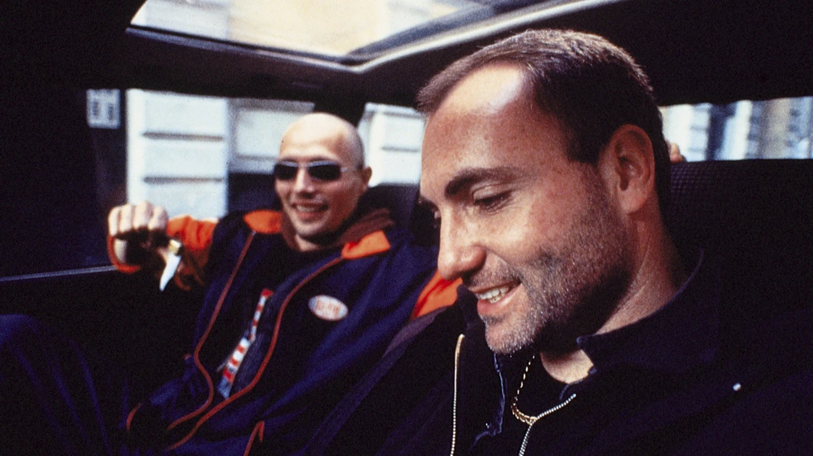

PUSHER

Las tres películas comparten el mismo universo en las calles de Dinamarca, pero funcionan como historias independientes centradas en distintos eslabones del narcotráfico
Sinopsis de la Obra
La trilogía Pusher (1996–2005), escrita y dirigida por el cineasta danés Nicolas Winding Refn, es una obra fundamental del cine criminal europeo contemporáneo. Ambientada en los bajos fondos de Copenhague, la saga se distingue por su estructura de relevo narrativo: cada entrega funciona de manera autónoma y cambia de punto de vista, elevando a un personaje secundario de la cinta anterior al rol protagónico.
- Pusher (1996): Sigue a Frank (Kim Bodnia), un traficante de heroína de poca monta que, tras perder un cargamento durante una redada policial, dispone de apenas unos días para saldar una deuda impagable con su proveedor antes de ser ejecutado.
- Pusher II: Con las manos ensangrentadas (2004): Se centra en Tonny (Mads Mikkelsen), el antiguo socio de Frank. Al salir de prisión, Tonny intenta ganarse la aprobación de su padre, un respetado gánster local, mientras enfrenta sus propias limitaciones, deudas y una paternidad inesperada.
- Pusher III: Soy el ángel de la muerte (2005): Retrata veinticuatro horas críticas en la vida de Milo (Zlatko Burić), el envejecido capo serbio de las entregas previas. Mientras intenta mantener su sobriedad y organizar la fiesta de cumpleaños de su hija, debe lidiar con un cargamento equivocado y el ascenso de una nueva generación de criminales más despiadados.
Razones por las que es considerada una buena peli
La trilogía alcanzó el estatus de culto gracias a su enfoque radicalmente opuesto a la glorificación habitual del género de gánsteres en Hollywood. En lugar de presentar criminales carismáticos, poderosos o estratégicos, Refn retrata a individuos vulnerables, impulsivos y atrapados en espirales de autodestrucción.
A esto se suma una estética visceral estilo documental —cámara en mano, iluminación natural, locaciones reales y diálogos improvisados— que genera una sensación constante de claustrofobia y urgencia. Además, su propia historia de producción alimentó su mística: Refn filmó la segunda y tercera parte tras caer en bancarrota personal, canalizando su propia desesperación financiera en la angustia existencial de sus protagonistas.
Importancia en la historia del cine
Dentro de la historia del cine, Pusher representa un punto de inflexión para la cinematografía escandinava de finales de los años noventa, demostrando que el cine independiente europeo podía abordar el thriller criminal con una crudeza y autenticidad inéditas. La saga sirvió como plataforma de lanzamiento internacional tanto para Nicolas Winding Refn —quien más tarde dirigiría obras aclamadas como Bronson (2008) y Drive (2011)— como para el actor Mads Mikkelsen, cuya interpretación de Tonny es ampliamente estudiada por su complejidad psicológica y contención emocional.
Para los amantes del cine y la crítica especializada, la trilogía es valorada como un ejercicio magistral de empatía hacia personajes moralmente reprobables. Al despojar al crimen de cualquier atractivo visual o romántico, Pusher ofrece un estudio humano sobre la masculinidad frágil, la lealtad y la fatalidad, consolidándose como una referencia obligada para el cine independiente y el realismo urbano moderno.